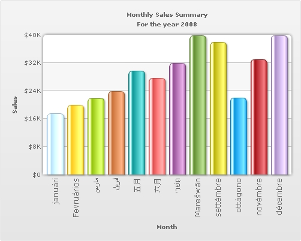

| Using Multilingual Text |
Let us now see how we can show multilingual text in FusionCharts XT using VB .NET. FusionCharts XT supports UTF-8 (Unicode Transformation Format-8) encoded multilingual character set. In this section we will be discussing three different methods to add multilingual text in FusionCharts XT. These are :
Before you proceed with the contents in this page, we recommend you to go through the Basic Examples and Plotting from Database Example sections, as we will directly use a lot of concepts defined in those sections. The code examples contained in this page are present
in Download Package > Code > VB_NET > UTF8Examples folder. |
| Things to remember before we start |
|
FusionCharts XT requires the UTF-8 encoded XML to have byte-order mark at the header of the XML file. So, to display UTF-8 characters in your charts, you need to stamp the UTF-8 encoded XML file with a byte-order mark. WARNING Do not rely on specifying the encoding for your XML file in the XML header region. <?xml version="1.0" The thumb rule - UTF-8 BOM stamp in the header is a must. FusionCharts XT supports only left-to-right languages as of now. It does not have native support for right-to-left languages like Hebrew. So, if you want to use Hebrew with FusionCharts XT, you will have to programmatically change the text sequence and then provide the data to FusionCharts XT. |
| The data source to be used |
|
The data to be used is almost equivalent to the one used in the Basic Examples section, except for the fact that this one contains multi-lingual UTF-8 characters. <chart caption='Monthly Sales Summary' subcaption='For the year 2008' xAxisName='Month' yAxisName='Sales' numberPrefix='$' showLabels='1' showValues='0' animation='1' baseFontColor='666666' lineColor='FF5904' lineAlpha='85' valuePadding='10' labelDisplay='rotate' useRoundEdges='1'> <set label='janu√°ri' value='17400' /> <set label='Fevru√°rios' value='19800' /> <set label='Ÿ.ÿßÿ±ÿ≥' value='21800' /> <set label='ÿ£ÿ®ÿ±ŸSŸ"' value='23800' /> <set label='‰∫"Êo^' value='29600' /> <set label='Â.≠Êo^' value='27600' /> <set label='◊™÷¥÷º◊©◊Å◊®÷¥◊T' value='31800' /> <set label='Mare≈°wƒÅn' value='39700' /> <set label='sett√®mbre' value='37800' /> <set label='ott√†gono' value='21900' /> <set label='nov√®mbre' value='32900' /> <set label='d√©cembre' value='39800' /> <styles> <definition> <style name='myCaptionFont' type='font' size='12'/> </definition> <application> <apply toObject='datalabels' styles='myCaptionFont' /> </application> </styles> </chart> |
| Using the Data String method |
|
We will be modifying our previous example file dataXML.aspx present in the BasicExample folder. The two files are almost equivalent except for the fact that our file will be marked with a byte order mark and will have UTF-8 characters. To insert the byte order mark-
The way the chart data is rendered and created is the same as the base example and is taken care of the code behind file. The only difference is that this data contains multi-lingual UTF-8 characters. The modified file is dataXML.aspx file present at the UTF8Examples folder. |
| Using the Data URL method |
|
We will be modifying our previous example file SimpleChart.aspx present in the BasicExample folder. In fact, no modifications will be made to this file but rather to the Data.xml file present in the Data folder. For the Data URL method of providing chart data, the URL data source must begin with the BOM stamp. We apply the BOM stamp in the same way as we did in the Data String method. You can get the modified file in the UTF8Examples/Data folder as Data.xml. |
| Database as data-source |
For this example we have added 'monthly_utf8' table to our FactoryDB schema. The table holds the attribute fields 'month_name' and 'amount', of which 'month_name' contains UTF-8 characters.The data retrieval and encoding process is the same as our previous example BasicDBExample.aspx in the DBExample folder. We just need to add a BOM mark before outputting any data. Since the data processing is done by the code behind file BasicDBExample.aspx.vb we will be outputting the BOM mark from that upon the Page_Load event. <% The above code sets the content type and writes the byte order mark. The modified file is in the UTF8Examples/Data folder as getXMLFromDatabase.aspx.vb. |
| The chart with UTF-8 characters |
The image below shows our sample chart rendered with UTF-8 characters.  |